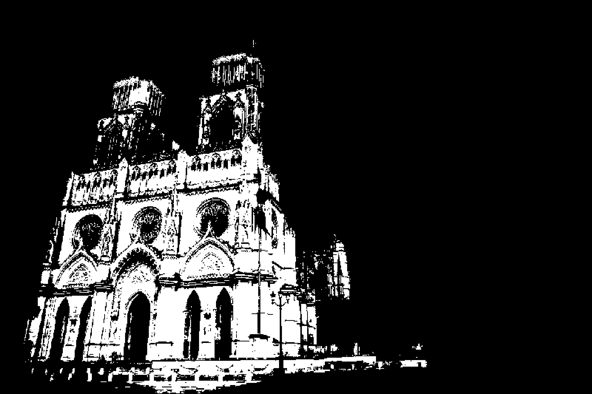

- Il faut que je rentre.
- Quelle heure est-il ?
- Mais qu’est-ce qui m’est passé par la tête ?
- Pourquoi est-ce que je suis aussi loin ?!
- J’espère qu’il ne lui est rien arrivé de grave...
- Et s’il était trop tard...? J’aurais dû rester... J’ai si peur.
- ...
-
- ...
- ...
- ...
- J’oublie quelque chose.
- Qu’est-ce que j’oublie ?
- J’ai du mal à comprendre pourquoi je lévite autant, tout le temps.
- Loin sont les jours où mes pieds touchaient encore le sol.
- Cette poussée qui me porte si haut et si loin.
- Je me suis lassé de la légèreté depuis si longtemps...
- Mais je n’ai jamais cessé de monter plus haut.
- Et là, je me sens plus léger que je ne l’ai jamais été.
- Je vole tellement haut qu’on pourrait dire que je suis en apesanteur.
- Indépendant de toute force...
- apex : point culminant de la trajectoire d’un projectile.
- Mon corps me faisait comprendre que quelque chose se passait.
- Je me suis senti partir et puis, soudainement...
- Les chemins qui y aboutissaient étaient nombreux.
- « Où vais-je ? » hésitais-je.
- J’étais sur le point de rebrousser chemin quand je sentis un vent.
- La bise du fleuve.
- Forte, froide, sèche.
- Intrigante.

- Elle était grande, trop grande.
- Je ne pouvais pas tomber plus bas et pourtant, un énorme vertige m’étreignit.
- « Je rentre ? » hésitais-je.
- La nuit, cette ville prend un tout autre visage.
- Un pas après l’autre, je m’embarquais dans une péripétie dont j’étais l’auteur.
- Mes pieds m’ont mené vers un monument.
- J’étais dans un autre monde.
- Nous rentrions tard, mon ami se trouvait dans un état grave.
- Il s’endormit sur-le-champ, toujours vêtu et chaussé.
- J’étais très inquiet pour lui.
- J’attendais, en le surveillant, jusqu’à ce qu’une envie irrépressible de sortir me prît.
- « Je peux y aller ? Tu es sûr ? Tu n’as pas besoin que je reste ? Youhou, tu dors ? »
- J’étais dans une situation inconfortable.
- Partir revenait à mettre la vie de mon ami en danger.
- Mais quelque chose m’appelait.
- Je sentais qu’une aventure m’attendait, dehors.
- Il était sur mon lit, endormi, vulnérable.
- J’ai hésité, puis je suis sorti.